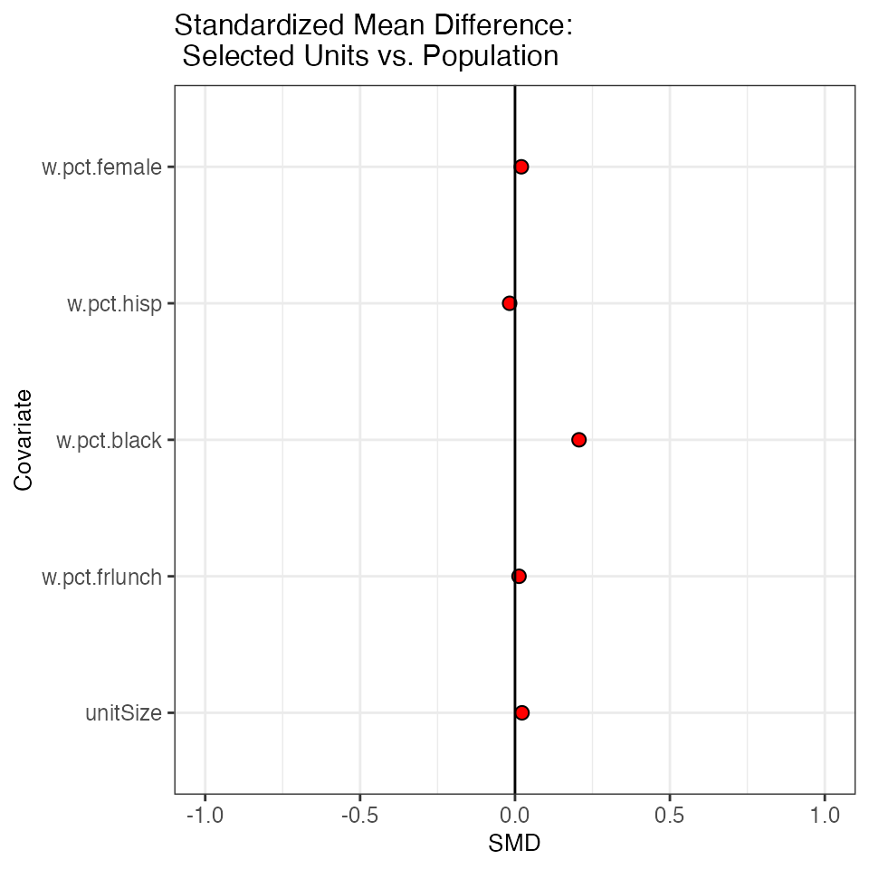
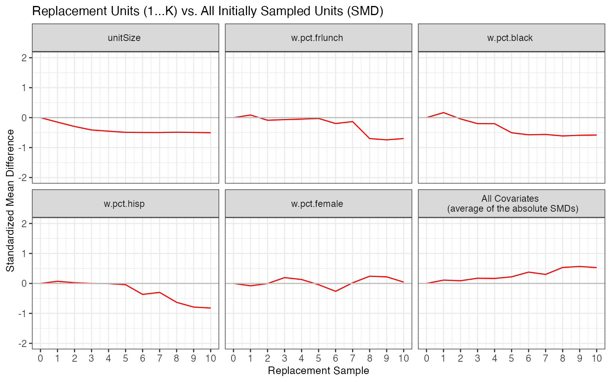
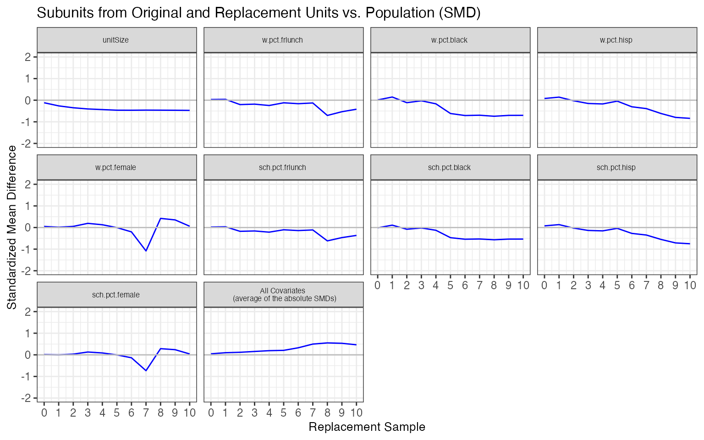

sitePickR: Getting Started
sitepickR-demo.RmdGetting Started: Sampling AY 2017-18 California schools and districts
Robert Olsen, Elizabeth A. Stuart & Elena Badillo-Goicoechea
2022-09-02
Introduction
sitepickR is designed to select a representative sample of sites for a prospective impact evaluation, such as a randomized controlled trial (RCT).
Like generalizeR, this package is designed for selecting schools but can be used to select any type of site defined by geography or administrative responsibility (e.g., county, job training center, health clinic). Unlike generalizeR, sitepicker is designed to select sites in two stages —first “units” that contain multiple sites located nearby and/or under the same administration and then “subunits” containing individual sites. Two-stage sampling may be necessary when the cost of the study depend on the number of units (e.g., school districts), and a one-stage sample of subunits (e.g., schools) would likely contain more units than the study can afford.
The main function in this package, selectMatch() lets the user carry out a two-level sample selection where the possibility of an initially selected participant not wanting to participate is anticipated. The procedure aims to reduce the bias (and/or loss of generalizability to the population) this could introduce.
In selecting units and subunits, sitepickR uses the cube method (e.g., Deville & Tillé, 2004; Tillé 2011). The cube method is a probability sampling method that is designed to satisfy criteria for balance between the sample and the population. Recent research has shown that this method performs well in simulations for studies of educational programs (Fay & Olsen, under review). To implement the cube method, sitepickerR uses the sampling R package. Users have the option to select units with equal probabilities or with probabilities proportional to their “size” measured in terms of the number of subunits nested within units.
In addition, sitepickR uses statistical matching to select possible replacement units. In education RCTs, the share of selected districts that agrees to participate tends to be low. To address this challenge, sitepickR selects and ranks up to 10 replacement districts for each districts selected using the cube method. Replacement districts are selected using statistical matching based on propensity score methods. To implement statistical matching, sitepickR uses the MatchIt R package.
sitepickR’s core sampling + matching procedure, implemented with the selectMatch() function, consists of four main steps:
- Study sample design: identify: 1) a target population that has a nested structure (e.g. [school district:school]); 2) observable covariates on interest at the unit level; 3) observable covariates of interest at the sub-unit level.
- Randomly select an initial sample of units from the target population.
- Obtain a list of ‘best’ matches (e.g. replacement candidates) for each initially selected unit, in terms of the covariates of interest.
- Assess balance and match quality in terms of the covariates of
interest:
- Balance between initially selected (‘original’) units and the target population.
- Balance between original units and each group of matches (1 to K, from closest to further).
- Balance between sub-units associated to each unit replacement group and the original sub-units in the population, in terms of available covariates of interest, both at the unit and sub-unit level.
This vignette will guide the reader, step-by-step, on sitepickR’s basic functionalities, with data from the Common Core of Data (CCD) for California schools (2017-18), using a pre-processed dataset that comes with the package installation. Further technical details on each of the package’s main functions and on the sample dataset is included in the documentation.
Package and data set up
First, if needed, install the sitepickR package with the help of devtools:
if(!require(devtools)){
install.packages("devtools")
}
if(!require(sitepickR)){
devtools::install_github("ElenaBadilloG/sitepickR")
}Now load the package by calling its library:
library(sitepickR)Now let’s load the sample CCD-California 2017-18 dataset that comes installed with the package:
rwCCD <- sitepickR::rwCCD
head(rwCCD)
#> LEAID NCESSCH w.pct.frlunch w.pct.black w.pct.hisp w.pct.female
#> 1 600001 60000109444 54.67626 0.7194245 43.165468 48.92086
#> 2 600006 60000608774 11.13861 0.8663366 9.282178 48.39109
#> 3 600009 60000908780 78.28947 0.0000000 78.289474 46.71053
#> 4 600013 60001308257 18.13563 1.7587074 13.126080 46.91478
#> 5 600013 60001308553 18.13563 1.7587074 13.126080 46.91478
#> 6 600014 60001409077 81.88847 5.5068437 67.853079 47.56987
#> sch.pct.frlunch sch.pct.black sch.pct.hisp sch.pct.female dtrct_size unitSize
#> 1 54.67626 0.7194245 43.165468 48.92086 278 1
#> 2 11.13861 0.8663366 9.282178 48.39109 808 1
#> 3 78.28947 0.0000000 78.289474 46.71053 152 1
#> 4 11.32597 1.6574586 10.497238 45.58011 1086 2
#> 5 24.94530 1.8599562 15.754923 48.24945 914 2
#> 6 90.60465 7.0697674 76.837209 47.62791 1075 3
#> distr.type
#> 1 A
#> 2 A
#> 3 D
#> 4 A
#> 5 A
#> 6 AProcess the raw aggregate dataset in order for it to be in the format expected by selectMatch by using sitepckr buildDF() function. This will re-define key variables and create a new variable, ‘unitSize’, that will be used in the step of the selectMatch procedure where units are initially sampled. Specifically, cube sampling allows us to (optionally) select units in a way that is not biased by its number of sub-units:
dfCCD <- buildDF(rwCCD,
unit_ID="LEAID", subUnit_ID="NCESSCH")
head(dfCCD)
#> LEAID NCESSCH w.pct.frlunch w.pct.black w.pct.hisp w.pct.female
#> 1 600001 60000109444 54.67626 0.7194245 43.165468 48.92086
#> 2 600006 60000608774 11.13861 0.8663366 9.282178 48.39109
#> 3 600009 60000908780 78.28947 0.0000000 78.289474 46.71053
#> 4 600013 60001308257 18.13563 1.7587074 13.126080 46.91478
#> 5 600013 60001308553 18.13563 1.7587074 13.126080 46.91478
#> 6 600014 60001409077 81.88847 5.5068437 67.853079 47.56987
#> sch.pct.frlunch sch.pct.black sch.pct.hisp sch.pct.female dtrct_size unitSize
#> 1 54.67626 0.7194245 43.165468 48.92086 278 1
#> 2 11.13861 0.8663366 9.282178 48.39109 808 1
#> 3 78.28947 0.0000000 78.289474 46.71053 152 1
#> 4 11.32597 1.6574586 10.497238 45.58011 1086 2
#> 5 24.94530 1.8599562 15.754923 48.24945 914 2
#> 6 90.60465 7.0697674 76.837209 47.62791 1075 3
#> distr.type unit_ID subUnit_ID
#> 1 A 600001 60000109444
#> 2 A 600006 60000608774
#> 3 D 600009 60000908780
#> 4 A 600013 60001308257
#> 5 A 600013 60001308553
#> 6 A 600014 60001409077If you’ll want to write the two main results into a .csv file, specify a preferred local folder path and two separate filenames, one for each output directory:
Study sample design
Define key input values
Since there is some underlying random sampling in selectMatch, we can set a seed for replication purposes (optional):
seed = 1122 Set distance tolerance for restricted covariates:
calip = 0.2 # maximum standard deviations of covariate distance around to target populationSpecify covariates of interest
Now, specify district level covariates on which you’ll want to match selected districts (units) with their replacement candidates on the non-selected sample:
unitSamp_varsCCD <- c("w.pct.frlunch", "w.pct.black", "w.pct.hisp", "w.pct.female") Similarly, specify school level covariates on which you’ll want to match districts. In our running CCD example, these covariates are just school (sub-unit) level aggregates of the same district level underlying variable. However, they could be any other sub-unit level variables available in your own dataset:
subUnitSamp_varsCCD <- c("sch.pct.frlunch", "sch.pct.black", "sch.pct.hisp", "sch.pct.female")You can (optionally) specify covariates on which to exactly match districts. These would usually be categorical covariates, with relatively few categories –otherwise the matching could fail, being too restrictive or even empty:
exact_match_vars <- c("distr.type")Similarly, you can optionally specify covariates on which to match districts within a given numeric caliper, in terms of standard deviations. Such covariates are expected to be numeric variables. In this case, we are interested in caliper-matching on thre covariates: percentage of Black, Hispanic, and female students in the district.
Notice that the lower the caliper, the more restrictive the matching (which could result in ferwe proportion of successful matches per replacement group, or even empty ones):
calip_match_vars <- c("w.pct.black", "w.pct.hisp", "w.pct.female")Get unit matches
We’ll now leverage sampling + MatchIt packages joint functionality, and match districts with their candidate replacements among the non-initially selected units using Mahalanobis distance. We can also do this using propensity scores, as specified on MatchIt’s documentation:
m.out <- selectMatch(df=dfCCD, # dataset
unit_ID="LEAID", # column name of district ID
subUnit_ID="NCESSCH", # column name of school ID
unit_vars=unitSamp_varsCCD,
subUnit_samp_vars=subUnitSamp_varsCCD,
exact_match_vars= exact_match_vars,
calip_match_vars=calip_match_vars ,
nUnitSamp = Nu, # original district sample size
nRepUnits = K, # number of desired matches per selected district
nsubUnits = Ns, # number of schools to sample from each candidate district
calipValue = calip, #
seedN = seed,
matchDistance = "mahalanobis",
sizeFlag = TRUE,
replaceFlag = FALSE, #match without replacement
writeOut = FALSE, # write out a csv file for: 1) matched units and 2) selected schools
replacementUnitsFilename = replDISTRICTS,
subUnitTableFilename = dictSCHOOLS
)Assess balance and match quality
By default, balance diagnostics in sitepickR are expressed in terms of standardized mean difference (SMD) between some two comparison groups of interest: initially selected districts (or schools) against target population (or against each of the K distrcit replacement groups).
1. Original units vs. target population
First, we want to look at the overall balance (SMD) between the initially selected districts (i.e. the group of districts that were selected in the initial cube sampling step of the selectMatch procedure) and all the districts in the population:
getUnitLovePlot(m.out)
We can also take a look at a table with the actual SMD values for each covariate of interest applying the getBalanceTable function:
getUnitBalanceTab(m.out)
#> Covariate SMD
#> 1 unitSize 0.0006001704
#> 2 w.pct.frlunch -0.0090978303
#> 3 w.pct.black 0.1846243001
#> 4 w.pct.hisp -0.0393681705
#> 5 w.pct.female -0.00156795602. Original units vs. replacement candidates
To assess the quality of our resulting district matches, we look at the balance (SMD) between the group of initially selected districts and each of its K replacement districts groups, where group 1 is composed of the first closest matches ordered in terms of distance, group 2 corresponds to the second-best matches, and so on:
getUnitReplacementBalance(m.out)
3. Successfully computed unit matches
We also want to look at the success rate of the matching process between the original districts and the replacement candidate groups from the non-select pool: for each of their K replacements groups (ordered from most to least similar, in terms of all specified covariates), we look at the percentage of replacements.
This percentage is expected to be inversely related to restrictions imposed by exact matching, caliper value, and inherent structure and size of the data, as well as K, the number of matches (i.e. replacement candidates) we want for each of the original districts:
getMatchCount(m.out)
4. Sub-units from original vs. candidate units
Ultimately, the procedure wants to yield not only districts but also schools that are similar to the target population, in terms both of the district level covariates and the school level ones. sitepickR’s getSubUnitBalance function lets us gauge the matching quality precisley on this terms:
getSubUnitBalance(m.out)